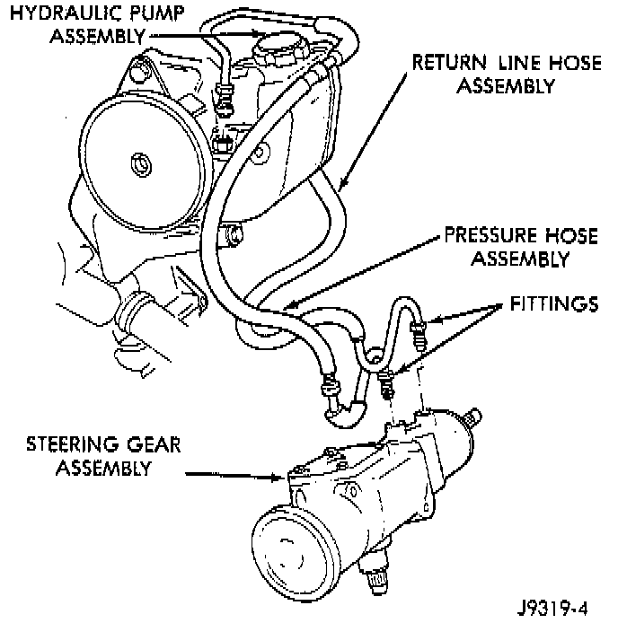

General Information

PUMP
The power steering pump is a constant flow rate and displacement vane type pump. The pump reservoir is attached to the pump body. The pump is connected to the steering by the pressure and return hoses.
GEAR
The steering gear used is a recirculating ball type gear. The gear acts as a rolling thread between the worm shaft and rack piston. The worm shaft is supported by a thrust bearing at the lower end and a bearing assembly at the upper end. When the worm shaft is turned the rack piston moves. The rack piston teeth mesh with the pitman shaft. Turning the worm shaft turns the pitman shaft, which moves the steering linkage.
COMPONENTS
The power steering system consists of:
- Hydraulic pump
- Recirculating ball steering gear
- Steering column
- Steering linkage